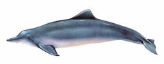
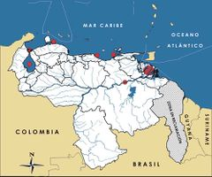

Sotalia guianensis
| Bufeo negro | |
|---|---|
|  | |
| Riesgo de extinción | |
 Vulnerable (UICN) | |
| Clasificación científica | |
| Reino: | Animalia |
| Filo: | Chordata |
| Clase: | Mammalia |
| Orden: | Cetacea |
| Familia: | Delphinidae |
| Género: | Sotalia |
| Especie: | Sotalia guianensis |
| Nombre binomial | |
|
Sotalia guianensis van Bénéden, 1864 | |
| Distribución | |
|
 Mapa de distribución de Sotalia guianensis | |
Contenido
Información de Evaluación
- Categoría y Criterio Regional: Vulnerable A4cde
- Fecha de Evaluación Regional: 2015
- Evaluadores: Jesús Morales-Campos y Ariany García-Rawlins
- Categoría y Criterio Global: Datos Insuficientes
Justificación
Evaluaciones Previas
1999: Casi Amenazada (NT)
2008: Vulnerable (VU)
Información General
Nombres comunes
Tonina costera, Tonina del Lago, Bufete, Bufeo negro, Delfín de río.
Notas taxonómicas
Sinónimos
Descripción
Es un delfín de pequeña talla, con un peso promedio de 80 kg y 2,2 m de longitud; su cuerpo es compacto y grisáceo con fajas grises más claras en sus costados, que suelen ser rosa en estadios juveniles (Flores y Da Silva 2009). Su aleta dorsal, casi triangular, es ligeramente ovalada en la punta; de frente redondeada, ojos oscuros y grandes, mientras que el rostrum es de longitud media para el ecotipo costero (Flores y Da Silva 2009) y alargado para el ecotipo presente en el río Orinoco (F. Trujillo obs. pers.). El ecotipo marino-costero presenta una fórmula dentaria 52-67 / 48-72 (K. De Turris-Morales obs. pers.). Su dieta está compuesta sobre todo por peces, calamares y algunos crustáceos (Vílches 2006, Flores y Da Silva 2009). La taxonomía del género Sotalia ha sido confusa y controversial. Durante la segunda mitad del siglo XX se llegaron a reconocer hasta cinco especies y dos subespecies (Caballero et al. 2007, Caballero et al. 2010). Desde fines del siglo XX, el género se consideró monotípico, con un ecotipo fluvial (restringido al río Amazonas y sus tributarios) y otro de hábitos marino-costeros (distribuido desde Santa Catarina-Brasil hasta Honduras) (Trujillo, F. y Diazgranados 2002, Cunha et al. 2005). Para el año 2005, claras evidencias permitieron concluir que estos ecotipos son especies diferentes (Cunha et al. 2005, Caballero et al. 2007, Caballero et al. 2010). Sin embargo, debido a su distribución discontinua es posible que un proceso de especiación temprana esté de igual modo ocurriendo en las poblaciones del río Orinoco. Urgen estudios genéticos y bioecológicos para determinar si esta población (del Orinoco) pertenece a la especie Sotalia guianensis, Sotalia fluviatilis o si se trata de una especie o subespecie diferente. Por otra parte, la población presente en el sistema de Maracaibo presenta cierto grado de aislamiento genético por lo que amerita consideraciones especiales de conservación, con especial énfasis dentro del lago de Maracaibo (Caballero et al. 2007, Caballero et al. 2010).
Distribución
Sotalia guianensis se distribuye desde las costas de Honduras hasta Florianópolis, sur de Brasil (Flores y Da Silva 2009). En Venezuela se encuentra en el sistema de Maracaibo (Casinos et al. 1981, Gil et al. 2003, León, T. 2005, Pirela et al. 2006), costas de Falcón, Carabobo y Miranda, golfo de Cariaco (Bolaños-Jiménez 1994, J. Bolaños-Jiménez obs. pers.), y en las bahías entre las localidades de Saucedo y Guaca, estado Sucre (Esteves y Oviedo 2007a, Oviedo 2008, Oviedo et al. 2012). En el Orinoco se distribuye desde el delta hasta el raudal Carichana, ubicado a 800 km, cerca de la confluencia del río Parguaza con el Orinoco, estado Bolívar (Boher et al. 1995, Linares y Rivas 2004, Gómez-Salazar et al. 2010, Gómez-Salazar et al. 2012, F. Trujillo obs. pers.). Existen registros de incursiones en trechos de 1-3 km río arriba en los ríos Parguaza y Cinaruco (Gómez-Salazar et al. 2010, Gómez-Salazar et al. 2012, A. Ferrer-Pérez obs. pers.). En el sistema de Maracaibo se ha notado la presencia de dos focos poblacionales importantes, uno al sur del propio sistema y otro en la zona entre el estrecho de Maracaibo, la bahía El Tablazo y el sur del golfo de Venezuela, en específico en el canal de navegación (Casinos et al. 1981, Carrasquero 2010, De Turris-Morales 2012, Delgado-Ortega 2013). La costa de Carúpano, estado Sucre, y sus superficies cercanas han sido identificadas como áreas críticas de alimentación, donde la población de S. guianensis no solo es bastante discreta, sino que presenta un patrón de residencia restringido a lo largo de 13 km de línea costera (Esteves y Oviedo 2007a, Oviedo 2008, Oviedo et al. 2012), tal como parece suceder en las demás localidades litorales donde se encuentra la especie. Se desconoce si hay intercambio genético entre los focos poblacionales existentes a lo largo de la costa continental del Caribe venezolano.
- Sistema: Marino
- Bioregión:
- Intervalo altitudinal (m):
- Endémica: No
Situación
Algunas estimaciones poblacionales de Sotalia guianensis están restringidas a pequeñas zonas de Centroamérica, Brasil y Colombia, en las que se han efectuado estudios puntuales (Trujillo, F. y Diazgranados 2002, Santos 2006, De Turris-Morales 2012). En Venezuela se han registrado algunas observaciones de comportamiento y estimaciones poblacionales en el sistema de Maracaibo (León, T. 2005, Pirela et al. 2006, Carrasquero 2010, Delgado-Ortega 2013) y en el estado Sucre (Esteves y Oviedo 2007a, Oviedo 2008, Oviedo et al. 2012). En la zona de la bahía El Tablazo se presume una densidad poblacional de 5,62 ind/km2 (Carrasquero 2010), mientras que en la zona centro-occidental del lago es de 1,66 ind/Km2 (Delgado-Ortega 2013). Se han localizado zonas de altas densidades relativas en el delta del Orinoco, alrededores de Ciudad Bolívar, entre el río Aro y el Caura y en las desembocaduras de los ríos Caroní, Apure y Arauca (O. L. Herrera-Trujillo obs. pers.). El estimado poblacional para el Orinoco es de 2205 individuos (Gómez-Salazar et al. 2012). En el sur del golfo de Venezuela, la tonina del lago emite silbidos con un ámbito de frecuencia entre 5,31 y 20,88 kHz (De Turris-Morales 2012). En el ámbito internacional se reporta en la categoría Datos Insuficientes (Secchi 2012).
- EOO (km2): Temporalmente sin información
- AOO (km2): Temporalmente sin información
- Tendencia Poblacional: Desconocida
Amenazas
Las principales amenazas que enfrenta Sotalia guianensis en toda su área de distribución están relacionadas con la mortalidad por interacciones con algunas pesquerías (en especial redes de ahorque) y por degradación del hábitat (Trujillo, F. y Diazgranados 2002, Bolaños-Jiménez y Rojas-Bracho 2005, Pirela et al. 2006, Sánchez-Criollo et al. 2007, Trujillo, F. et al. 2010a, Delgado-Ortega 2013). Las poblaciones del sistema de Maracaibo enfrentan intensas amenazas de origen antrópico, principalmente vinculadas con actividades petroleras, pesqueras y con tráfico de embarcaciones. Se ha determinado que existe mortalidad en redes pesqueras y aprovechamiento de los ejemplares enmallados (sobre todo en consumo, comercio y uso como carnada para palangre tiburonero) (K. De Turris-Morales obs. pers., Pirela et al. 2002, León, T. 2005, Sánchez-Criollo et al. 2007, Carrasquero 2010), de igual manera, impacto de la captura incidental por aparejos de pesca abandonados, en especial de pesca de cangrejo azul (Delgado-Ortega 2013). Es motivo de preocupación la degradación por presión antropogénica de áreas críticas a lo largo de la costa del estado Sucre donde sobreviven poblaciones discretas con una superficie de vivienda notablemente restringida, y en potencia asociada con una distribución relicta (Esteves y Oviedo 2007a, Oviedo 2008, Oviedo et al. 2012). Algunos de los focos poblacionales de la costa Caribe venezolana se encuentran en alto riesgo producto de la mortalidad por enmallamientos en redes de pesca. El río Orinoco está considerado por diversos autores como el ecosistema acuático más amenazado de Suramérica (Sánchez-Criollo et al. 2007, Gómez-Salazar et al. 2010, Gómez-Salazar et al. 2012), siendo la explotación petrolera, la minería del oro y los metales pesados derivados de esta (incluyendo el mercurio), la interacción con pesquerías, malas prácticas turísticas y el cambio de uso de los suelos, las principales amenazas para Sotalia guianensis (Santos 2006, Portocarrero-Aya et al. 2010).
Conservación
Como todas las especies de Sotalia, se encuentra en el Apéndice I de la Convención sobre el comercio internacional de especies amenazadas de fauna y flora silvestres (Cites 2014). Debido a un aumento en la frecuencia de varamientos en las costas del estado Zulia, entre los años 2001 y 2002 se inició una investigación penal dirigida a esclarecer las posibles causas. Esto condujo al ICLAM a plantear el desarrollo de varios proyectos de investigación orientados a evaluar el estado de las poblaciones de delfines y otros mamíferos marinos en aguas del golfo de Venezuela, la calidad fisicoquímica y biológica del agua y la interacción de la actividad pesquera con los cetáceos (Pirela et al. 2008, Rojas, J. et al. 2008, Delgado-Ortega 2013). Por la relativa frecuencia de avistamientos, en algunas regiones dentro del sistema de Maracaibo y río Orinoco, se identifica con potencial para el ecoturismo, lo cual amerita mayores esfuerzos de investigación y pertinente reglamentación por parte de la autoridad nacional ambiental. Otros esfuerzos deberían estar dirigidos a evaluar la estructura genética, amenazas y tendencias poblacionales, con énfasis en las agrupaciones del sistema de Maracaibo, costa de Sucre y río Orinoco. Se recomienda la actualización del decreto N° 1485 sobre especies en veda y su adaptación al estado de conocimiento actual (Venezuela 1996a), con base en la Estrategia nacional de diversidad biológica (Minamb 2010) y el decreto 1257 de Normas sobre evaluación ambiental de actividades susceptibles de degradar el ambiente (Venezuela 1996c). Se aconseja la inclusión de análisis y conservación de la especie en los términos de referencia de los estudios de línea base, monitoreo e impacto ambiental del Proyecto Magna Reserva, así como la promoción del ejercicio responsable del turismo de observación en su medio natural, en especial en el delta del Orinoco, estado Bolívar y sur del lago de Maracaibo.
Autorías
Autores originales
Héctor Barrios-Garrido, Salvador Boher-Bentti, Kareen De Turris-Morales, Nínive Espinoza, Arnaldo Ferrer-Pérez, Olga L. Herrera-Trujillo, Tatiana León, Lenín Oviedo, Daría Pirela, Marcela Portocarrero-Aya, Leonardo Sánchez-Criollo, Fernando Trujillo y Jaime Bolaños-Jiménez
Colaboradores
Ilustrador
Astolfo Mata
Referencias
- Barrios-Garrido, H., Boher-Bentti, S., De Turris-Morales, K., Espinoza, N., Ferrer-Pérez, A., Herrera-Trujillo, O. L., León, T., Oviedo, L., Pirela, D., Portocarrero-Aya, M., Sánchez-Criollo, L., Trujillo, F. y Bolaños-Jiménez, J. (2015). Tonina costera,Sotalia guianensis. En: J.P. Rodríguez, A. García-Rawlins y F. Rojas-Suárez (eds.) Libro Rojo de la Fauna Venezolana. Cuarta edición. Provita y Fundación Empresas Polar, Caracas, Venezuela. Recuperado de: animalesamenazados.provita.org.ve/content/tonina-costera Vie, 09/03/2018 - 11:15
- Boher, S., Bolaños, J. y Cova, L. J. (1995). Sobre un avistamiento del delfín estuarino o bufete (Sotalia fluviatilis) en el Orinoco Medio. Acta Científica Venezolana 46(1): 217-218.
- Bolaños-Jiménez, J. (1994). Inventario de muestras biológicas de cetáceos y sirénidos existentes en los museos de Venezuela. Una base de datos en DBASE III Plus. Trabajo Dirigido, Especialización en Manejo de Fauna Silvestre y Acuática, Departamento de Estudios Ambientales, Universidad Simón Bolívar. Caracas.
- Bolaños-Jiménez, J. y Rojas-Bracho, L. (2005). A review of fisheries bycatch in the Wider Caribbean Region. Regional Workshop of Experts on the Development of the Marine Mammal Action Plan for the Wider Caribbean Region, Caribbean Environment Program (CEP) of the United Nations Environment Programme (UNEP). Bridgetown, Barbados, 18-21 de julio de 2005.
- Caballero, S., Trujillo, F., Vianna, J. A., Barrios-Garrido, H., Montiel, M. G., Beltrán-Pedreros, S., Marmontel, M., Santos, M. C., Rossi-Santos, M., Santos, F. R. y Baker, C. S. (2007). Taxonomic status of the genus Sotalia species level ranking for "tucuxi" (Sotalia fluviatilis) and "costero" dolphins (Sotalia guianensis). Marine Mammal Science 23(2): 358-386.
- Caballero, S., Trujillo, F., Vianna, J. A., Barrios-Garrido, H., Montiel, M. G., Beltrán-Pedreros, S., Marmontel, M., Santos, M. C. O., Rossi-Santos, M. R., Santos, F. R. y Baker, S. (2010). Mitochondrial DNA diversity, differentiation and phylogeography of the South American riverine and coastal dolphins Sotalia fluviatilis and Sotalia guianensis. Latin American Journal of Aquatic Mammals 8(1-2): 69-79.
- Carrasquero, J. (2010). Estimación de la densidad poblacional del delfín estuarino (Sotalia guianensis) en el sur del Golfo de Venezuela, Estado Zulia. Tesis de Licenciatura, La Universidad del Zulia, Facultad Experimental de Ciencias. 60 pp.
- Casinos, A., Bisbal, F. y Boher, S. (1981). Sobre tres ejemplares de Sotalia fluviatilis del Lago de Maracaibo (Venezuela) (Cetacea, Delphinidae). Publicaciones del Departamento de Biología. Universidad de Barcelona 7: 93-96.
- Cites. (2014). Apéndices I, II y III (válidos desde el 14 de septiembre de 2014). Convención sobre el Comercio Internacional de Especies Amenazadas de Fauna y Flora Silvestres (CITES). 47 pp.
- Cunha, H. A., da Silva, V. M. F., Lailson-Brito, J. J., Santos, M. C. O., Flores, P. A. C., Martin, A. R., Azevedo, A. F., Fragoso, A. B. L., Zanelatto, R. C. y Solé-Cava, A. M. (2005). Riverine and marine ecotypes of Sotalia fluviatilis are different species. Marine Biology 148: 449-457.
- Delgado-Ortega, G. (2013). Distribución espacial y temporal de la tonina del lago (Sotalia guianensis) en la costa centro - occidental del Lago de Maracaibo. Tesis de Licenciatura, La Universidad del Zulia, Facultad Experimental de Ciencias. 58 pp.
- De Turris-Morales, K. (2012). Descripción de los silbidos emitidos por la tonina del lago (Sotalia guianensis) en el sur del Golfo de Venezuela. Tesis de Licenciatura, La Universidad del Zulia, Facultad Experimental de Ciencias. 64 pp.
- Esteves, M. A. y Oviedo, L. E. (2007a). El redescubrimiento del delfín estuarino "tonino" (Sotalia guianensis) al norte de la Península de Paria. En: Libro Resúmenes, VII Congreso Venezolano de Ecología. Ciudad Guayana, Estado Bolívar, 5-9 de noviembre de 2007.
- Flores, P. A. C. y Da Silva, V. M. F. (2009). Tucuxi and Guiana Dolphin Sotalia fluviatilis and S. guianensis. Páginas: 1188-1192. En: Perrin, W. F., Wursig, B. y Thewissen, J. G. M. (Eds.). Encyclopedia of Marine Mammals, Second Edition. Academic Press. San Diego, California, Estados Unidos.
- Gil, K., Casler, C. L. y Weir, E. (2003). La Biodiversidad en el Lago de Maracaibo, Campo Urdaneta Oeste. Shell Venezuela. 63 pp.
- Gómez-Salazar, C., Portocarrero-Aya, M., Trujillo, F., Caballero, S., Bolaños-Jiménez, J., Utreras, V., McGuire, T., Ferrer-Pérez, A., Pool, M. y Aliaga-Rossel, E. (2010). Update on the freshwater distribution of Sotalia in Colombia, Ecuador, Perú, Venezuela and Suriname. Lajam 78(1-2): 171-178.
- Gómez-Salazar, C., Trujillo, F., Portocarrero-Aya, M. y Whitehead, H. (2012). Population, density estimates, and conservation of river dolphins (Inia and Sotalia) in the Amazon and Orinoco river basins. Marine Mammal Science 28(1): 124-153.
- León, T. (2005). Craneometría del género Sotalia y algunos aspectos de su ecología. Tesis de Licenciatura, La Universidad del Zulia, Facultad Experimental de Ciencias. Maracaibo, Venezuela. 99 pp.
- Linares, O. J. y Rivas, B. (2004). Mamíferos del Sistema Deltaico (delta del Orinoco-golfo de Paria), Venezuela. Memoria Fundación La Salle Ciencias Naturales 159-160: 27-104.
- Minamb (2010). Memoria y cuenta año 2009. Ministerio del Poder Popular para el Ambiente, Oficina de Planificación y Presupuesto, Dirección de Planificación. Venezuela: 419 pp.
- Oviedo, L. (2008). Ecology of neritic odontocete cetaceans in an upwelling ecosystem in the northeast coast of Venezuela: Delphinus sp., Sotalia guianensis. Final Technical Report 2007-2008 Term to the Rufford Small Grants for Nature Conservation, October 2008.
- Oviedo, L., Silva-Hernández, M. G. y Esteves, M. A. (2012). The ecology of neritic small odontocetes in N. E. Venezuela. Report to The Rufford Small Grant Program. Caracas, Venezuela.
- Pirela, D., Urdaneta, A., Escola, F., Chacín, M. y Casler, C. (2006). Caracterización de la fauna acuática de la cuenca baja del Río Catatumbo, Estado Zulia. Resumen. En: Memorias I Congreso Internacional de la Cuenca del Lago de Maracaibo, ICLAM-MINAMB, 30 jul. al 4 ago. 2006. Maracaibo, estado Zulia.
- Pirela, D., Rojas, J., Bolaños-Jiménez, J., Márquez, R., Troncone, F., Hernández, J. y Mujica, F. (2008). Estudio Preliminar de las Interacciones entre la Actividad Pesquera, Cetáceos y Tortugas Marinas en el Golfo de Venezuela. Informe Técnico. Instituto para la Conservación y Control de la Cuenca del Lago de Maracaibo (ICLAM), Ministerio del Ambiente. 47 pp.
- Portocarrero-Aya, M., Ferrer, A., Lasso, C. A., Ruiz-García, M., Bolaños Jiménez, J. y Caballero, S. (2010). Status, distribution and conservation of the river dolphins Inia geoffrensis and Sotalia sp. in Venezuela. 249 pp. En: Trujillo, F., Crespo, E., Van Damme, P. A. y Usma, J. S. (Eds.). The Action Plan for South American River Dolphins 2010 - 2010. WWF, Fundación Omacha, WDS, WDCS, Solamac. Bogotá, D. C., Colombia.
- Rodríguez, J. P. y Rojas-Suárez, F. (1999). Libro Rojo de la Fauna Venezolana, segunda edición. PROVITA, Fundación Polar. Caracas. 444 pp.
- Rodríguez, J. P. y Rojas-Suárez, F. (Eds.) (2008). Libro Rojo de la Fauna Venezolana, tercera edición. Provita y Shell Venezuela, S. A. Caracas, Venezuela. 364 pp.
- Rojas, J., Pirela, D., Bolaños-Jiménez, J., Márquez, R., Troncone, F., Hernández, J. y Mujica, F. (2008). Abundancia y Distribución de Cetáceos y Tortugas Marinas en el golfo de Venezuela. Informe Técnico. Instituto para la Conservación y Control de la Cuenca del Lago de Maracaibo (ICLAM), Ministerio del Ambiente. 39 pp.
- Sánchez-Criollo, L., Briceño-Reina, Y., Bolaños-Jiménez, J., Hernández-Rangel, J. L. y Bermúdez-Villapol, L. (2007). Interacciones antrópicas como causas del incremento en la mortalidad y varamientos de cetáceos en el Estado Zulia. En: Libro Memorias VII Congreso Venezolano de Ecología. Ciudad Guayana, Estado Bolívar, 5-9 de noviembre de 2007.
- Santos, M. C. (2006). Abundance estimates of Sotalia dolphins: a review. En: Book of Abstracts, Workshop on Research and Conservation of the genus Sotalia. Buzios, Rio de Janeiro, Brazil, 19-23 de junio, 2006.
- Secchi, E. (2012). Sotalia guianensis. The IUCN Red List of Threatened Species. Version 2015.1. Disponible en www.iucnredlist.org, consultada el 22 de junio de 2015.
- Trujillo, F. y Diazgranados, M. C. (2002). Delfines de Río en la Amazonía y Orinoquia: Ecología y Conservación. Serie Fundación Omacha. Bogotá, Colombia: 74 pp.
- Trujillo, F., Lasso, C. A., Diazgranados, M., Farina, O., Pérez, L., Barbarino, A., González, M. y Usma, J. (2010). Evaluación de la contaminación por mercurio en peces de interés comercial y de la concentración de organoclorados y organofosforados en el agua y sedimentos de la Orinoquia. En: Lasso, C. A., Usma, J. S., Trujillo, F. y Rial, A. (Eds.). Biodiversidad de la cuenca del Orinoco: bases científicas para la identificación de áreas prioritarias para la conservación y uso sostenible de la biodiversidad. Instituto de Investigación de Recursos Biológicos Alexander von Humboldt, WWF Colombia, Fundación Omacha, Fundación La Salle e Instituto de Estudios de la Orinoquia (Universidad Nacional de Colombia). Bogotá, D. C., Colombia.
- Venezuela. (1996a). Decreto 1485: Animales Vedados para la Caza. Gaceta Oficial No. 36.059 - 7 de octubre de 1996. Caracas.
- Venezuela. (1996c). Decreto Nº 1257. Normas sobre evaluación ambiental de actividades susceptibles de degradar el ambiente. Gaceta Oficial 35946 de fecha 25 de abril de 1996.
- Vílches, I. (2006). Dieta del delfín estuarino Sotalia fluviatilis en el Golfo de Venezuela. Trabajo Especial de Grado, La Universidad del Zulia, Facultad Experimental de Ciencias. Núcleo Biología. Maracaibo, Venezuela. 41 pp.